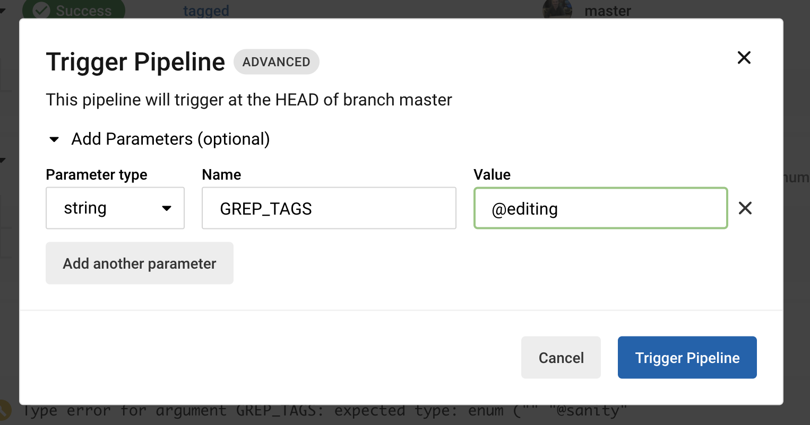

How to tag your Cypress tests to make sure anyone can quickly test the changes.
Let's say you have hundreds of end-to-end tests (this is our current situation at Mercari US). Running the tests in parallel makes the test run faster, but there is a problem. If someone inside the organization wants to change how some internal service operates, or changes a particular database field, you do not want to run all the tests. Or at least, you want to run the tests for that product area first to provide fast and useful feedback. This is how I organize and tag my end-to-end tests and run them.
🧰 I will be using the repo bahmutov/test-todomvc-using-app-actions as my example. It only has about 30 tests, but the lessons scale even better when the number of tests is large.
The first thing I do is to split a single long spec file into separate spec files. Each spec file is focused on a particular application feature. I try to keep the spec duration under two minutes, and I split long tests to make them easier to run. Currently I have 8 specs in the project:
Tip: I will use find-cypress-specs utility to print specs and test names.
In each spec file, I add a tag to the suite of tests using the cypress-grep convention. For example, the tests related to routing are tagged @routing. The @ character has no special meaning, it just makes it simpler to find it in the source code.
cypress/integration/routing-spec.js
1 2 3 4 5 6 7 8 9 10 11 12 13 14 15 16 17
describe('TodoMVC', function () { beforeEach(function () { cy.visit('/') })
context('Routing', { tags: '@routing' }, function () { it('should allow me to display active items', function () { ... })
it('should respect the back button', function () { ... })
... }) })
I can see all tests and their tags using find-cypress-specs with --names argument.
cypress/integration/adding-spec.js (7 tests) └─ TodoMVC ├─ New Todo [@adding] │ ├─ should allow me to add todo items │ ├─ adds items │ ├─ should clear text input field when an item is added │ ├─ should append new items to the bottom of the list │ ├─ should trim text input │ └─ should show #main and #footer when items added └─ Adds items (spy example) └─ calls inform
cypress/integration/clear-completed-spec.js (3 tests) └─ TodoMVC └─ Clear completed button [@complete] ├─ should display the correct text ├─ should remove completed items when clicked └─ should be hidden when there are no items that are completed
cypress/integration/complete-all-spec.js (3 tests) └─ TodoMVC └─ Mark all as completed [@complete] ├─ should allow me to mark all items as completed ├─ should allow me to clear the complete state of all items └─ complete all checkbox should update state when items are completed / cleared
cypress/integration/editing-spec.js (5 tests) └─ TodoMVC └─ Editing [@editing] ├─ should hide other controls when editing ├─ should save edits on blur ├─ should trim entered text ├─ should remove the item if an empty text string was entered └─ should cancel edits on escape
cypress/integration/item-spec.js (3 tests) └─ TodoMVC └─ Item [@item] ├─ should allow me to mark items as complete ├─ should allow me to un-mark items as complete └─ should allow me to edit an item
cypress/integration/persistence-spec.js (1 test) └─ TodoMVC └─ Persistence [@persistence] └─ should persist its data
cypress/integration/routing-spec.js (5 tests) └─ TodoMVC └─ Routing [@routing] ├─ should allow me to display active items ├─ should respect the back button ├─ should allow me to display completed items ├─ should allow me to display all items └─ should highlight the currently applied filter
cypress/integration/spec.js (3 tests) └─ TodoMVC ├─ When page is initially opened │ └─ should focus on the todo input field ├─ No Todos │ └─ should hide #main and #footer └─ Counter └─ should display the current number of todo items
found 8 specs and 30 tests
Not all tests need tags. For example, the last spec.js collects miscellaneous tests without any tags.
Run any changed tests first
I have shown how to run the changed specs first, see GitHub Actions post or CircleCI post. In my example application, I am using CircleCI, here is how I run the changed specs before running all tests. You can find the full CircleCI config file at circle.yml.
version:2.1 orbs: # https://github.com/cypress-io/circleci-orb cypress:cypress-io/cypress@1.29.0 workflows: build: jobs: -cypress/run: name:Runchangedtests start:npmstart no-workspace:true command:| # stop if on master branch - all tests should run there if [ "$CIRCLE_BRANCH" = "master" ]; then echo "Default branch, will run all tests" exit 0 fi # be careful about counting the lines specsLines=$(gitdiff--name-only--diff-filter=AMRorigin/master| { grepcypress/integration||true; }) n=$(echo$specsLines|sed'/^\s*$/d'|wc-l|tr-d' ') specs=$(echo$specsLines|sed'/^\s*$/d'|tr'\n'',') echo"" echo"Changed and added ${n} Cypress specs" echo${specs} echo"" if [ ${n} -lt1 ];then echo"No Cypress specs changed, exiting..." exit0 fi # we have to form the Cypress run command ourselves npxcypressrun--spec${specs}
Running the changed tests first gives us fast feedback. If the changed tests pass, all tests execute to confirm the application works. Notice that running the changed tests is much faster compared to running all tests.
The sanity tag
As the number of specs grows, running all tests on every pull request becomes a burden on the infrastructure and CI resources. Thus I recommend creating a small set of sanity tests, with one test per feature. We can tag these tests @sanity and run on every pull request by default. Here are the tagged tests
cypress/integration/adding-spec.js (7 tests) └─ TodoMVC ├─ New Todo [@adding] │ ├─ should allow me to add todo items │ ├─ adds items [@sanity] │ ├─ should clear text input field when an item is added │ ├─ should append new items to the bottom of the list │ ├─ should trim text input │ └─ should show #main and #footer when items added └─ Adds items (spy example) └─ calls inform
cypress/integration/clear-completed-spec.js (3 tests) └─ TodoMVC └─ Clear completed button [@complete] ├─ should display the correct text ├─ should remove completed items when clicked [@sanity] └─ should be hidden when there are no items that are completed
cypress/integration/complete-all-spec.js (3 tests) └─ TodoMVC └─ Mark all as completed [@complete] ├─ should allow me to mark all items as completed ├─ should allow me to clear the complete state of all items [@sanity] └─ complete all checkbox should update state when items are completed / cleared
cypress/integration/editing-spec.js (5 tests) └─ TodoMVC └─ Editing [@editing] ├─ should hide other controls when editing ├─ should save edits on blur [@sanity] ├─ should trim entered text ├─ should remove the item if an empty text string was entered └─ should cancel edits on escape
cypress/integration/item-spec.js (3 tests) └─ TodoMVC └─ Item [@item] ├─ should allow me to mark items as complete [@sanity] ├─ should allow me to un-mark items as complete └─ should allow me to edit an item
cypress/integration/persistence-spec.js (1 test) └─ TodoMVC └─ Persistence [@persistence] └─ should persist its data [@sanity]
cypress/integration/routing-spec.js (5 tests) └─ TodoMVC └─ Routing [@routing] ├─ should allow me to display active items ├─ should respect the back button ├─ should allow me to display completed items [@sanity] ├─ should allow me to display all items └─ should highlight the currently applied filter
cypress/integration/spec.js (3 tests) └─ TodoMVC ├─ When page is initially opened │ └─ should focus on the todo input field ├─ No Todos │ └─ should hide #main and #footer └─ Counter └─ should display the current number of todo items [@sanity]
found 8 specs and 30 tests
We can run the sanity tests instead of all the tests. Let's modify the "Run all specs" job by passing grepTags parameter through the Cypress environment variables. This is how you control the cypress-grep plugin.
If you look at the CircleCI output, you can see that cypress-grep plugin is working
1 2 3
cypress-grep: filtering using tag "@sanity" cypress-grep: will omit filtered tests cypress-grep: filtering specs using tag "@sanity"
The final test run only executed 8 tests.
Bonus: running just the sanity tests and skipping the rest saves on your Cypress Dashboard bill 💸
All tests
Hmm, we should still run all tests sometimes. The best solution is to run all tests periodically, for example every night, plus on demand by triggering the workflow using something like bahmutov/run-cy-on-ci. I have added a workflow to run all tests nightly
Imagine someone is changing a component related to editing the Todo text on the page. They have deployed the site and want to run all end-to-end tests related to editing items. Without code coverage it is hard to say which E2E tests should run. Well, in general we run the sanity tests and we should run all tests tagged @editing. Let's allow anyone to trigger the CI workflow and to pass the tag to the test job. I will add a new workflow and pipeline parameters to the circle.yml file.
Our new workflow tagged only runs when there is GREP_TAGS string and an empty default string "" does not count. Let's trigger the workflow from the CircleCI web interface.
Add a string parameter named GREP_TAGS and enter one of the above enum values, like @editing.

The workflow tagged runs, while the normal workflow is skipped. On other commits, the entire build workflow runs, while the tagged workflow is skipped.
The workflows are enabled and disabled using the pipeline parameter
The user who tries to run the tests by a tag on CircleCI has to remember how to trigger the workflow and add the right parameter. I would like the experience to be simpler. Thus I looked at using GitHub Actions with its new "workflow_dispatch" workflows. In the .github/workflows/tagged.yml I have defined a workflow where each input parameter is a boolean for the tag to run. It looks scary, but this is simple repetition: each tag matches one input parameter and one job to run.
name:tagged on: workflow_dispatch: inputs: # these inputs will be shown to the user on GitHub Actions page # and the user can simply check off the tags to run sanity: description:Runtheteststagged"@sanity" required:false type:boolean adding: description:Runtheteststagged"@adding" required:false type:boolean ...
# install dependencies and start the server # https://github.com/cypress-io/github-action -name:Installdependencies📦 uses:cypress-io/github-action@v2 with: runTests:false
This is pretty sweet - any user with GitHub access to the repo can click on the button "Run workflow" and check off the tags to test.
Only the picked test tags execute, the other steps are skipped.
Beautiful.
Separate jobs
Instead of having a single job executing tagged tests, we could have created a separate job for each tag that can be picked. These jobs could all work in parallel. Here is the main part of the tagged-jobs.yml
# separate running each grep tag into own job name:tagged-jobs on: workflow_dispatch: inputs: # these inputs will be shown to the user on GitHub Actions page # and the user can simply check off the tags to run sanity: description:Runtheteststagged"@sanity" required:false type:boolean adding: description:Runtheteststagged"@adding" required:false type:boolean ...
jobs: # each job is independent from other jobs # and only runs the tests for the picked test tag sanity: if:${{github.event.inputs.sanity=='true'}} runs-on:ubuntu-20.04 steps: -name:Checkout🛠uses:actions/checkout@v2
Now we can pick the features to test without worrying about a long queue of tests running sequentially.
The screenshot below shows how the jobs proceed in parallel with each other
Fast.
The regression tag
Imagine you are deploying a schema change in the database, or fiddling with some API service. You might not know which area of the site you might have broken. Running all tests might take too long, and running just the tests tagged @sanity is not enough - they are only covering the essential user paths. We need something in between the @sanity list and all the tests.
This is where the @regression tag comes in. We can mark a big chunk of the tests with this tag, and whenever we want to confirm the site still works, we run those tests by tag. Of course, running all the tests could be better, but there is a trade off: speed vs completeness.
Here is how the "clear-completed-spec.js" looks. The tests tagged @sanity get the second tag, and another test now gets its @regression tag.
cypress/integration/clear-completed-spec.js
1 2 3 4 5 6 7 8 9 10 11 12 13
describe('TodoMVC', function () { context('Clear completed button', { tags: '@complete' }, function () { it('should display the correct text', function () { ... })
it('should remove completed items when clicked', { tags: ['@sanity', '@regression'] }, function () { ... })
it('should be hidden when there are no items that are completed', { tags: '@regression' }, function () { ... }) }) })
In general, the @regression set is a superset of the @sanity tests.
cypress/integration/adding-spec.js (7 tests) └─ TodoMVC ├─ New Todo [@adding] │ ├─ should allow me to add todo items [@regression] │ ├─ adds items [@sanity, @regression] │ ├─ should clear text input field when an item is added [@regression] │ ├─ should append new items to the bottom of the list │ ├─ should trim text input [@regression] │ └─ should show #main and #footer when items added └─ Adds items (spy example) └─ calls inform
cypress/integration/clear-completed-spec.js (3 tests) └─ TodoMVC └─ Clear completed button [@complete] ├─ should display the correct text ├─ should remove completed items when clicked [@sanity, @regression] └─ should be hidden when there are no items that are completed [@regression]
cypress/integration/complete-all-spec.js (3 tests) └─ TodoMVC └─ Mark all as completed [@complete] ├─ should allow me to mark all items as completed [@regression] ├─ should allow me to clear the complete state of all items [@sanity, @regression] └─ complete all checkbox should update state when items are completed / cleared
cypress/integration/editing-spec.js (5 tests) └─ TodoMVC └─ Editing [@editing] ├─ should hide other controls when editing ├─ should save edits on blur [@sanity] ├─ should trim entered text ├─ should remove the item if an empty text string was entered └─ should cancel edits on escape
cypress/integration/item-spec.js (3 tests) └─ TodoMVC └─ Item [@item] ├─ should allow me to mark items as complete [@sanity, @regression] ├─ should allow me to un-mark items as complete [@regression] └─ should allow me to edit an item
cypress/integration/persistence-spec.js (1 test) └─ TodoMVC └─ Persistence [@persistence] └─ should persist its data [@sanity, @regression]
cypress/integration/routing-spec.js (5 tests) └─ TodoMVC └─ Routing [@routing] ├─ should allow me to display active items [@regression] ├─ should respect the back button ├─ should allow me to display completed items [@sanity, @regression] ├─ should allow me to display all items [@regression] └─ should highlight the currently applied filter
cypress/integration/spec.js (3 tests) └─ TodoMVC ├─ When page is initially opened [@regression] │ └─ should focus on the todo input field ├─ No Todos │ └─ should hide #main and #footer [@regression] └─ Counter └─ should display the current number of todo items [@sanity, @regression]
found 8 specs and 30 tests
I have updated the CircleCI and the GitHub Actions workflows to allow selecting @regression tag.
The final tag organization
To summarize: we have organized our tests using tags. There are feature-level tags like @editing and two "coverage" tags: @sanity and @regression. The sets of tests overlap, and there might be tests without any tags.
On every pull request we execute the changed specs and then run @sanity tests. Whenever someone is working on the feature, they can quickly run the tests for that feature using the individual feature tag. When in doubt, you can execute a wider set of tests using @regression tag. To completely test the software (which we can do periodically), one can run all the tests without any filtering by tag.
Bonus 1: GitHub triggers CircleCI
If you have implemented running tests on CircleCI, but want to use the GitHub Actions user interface, you can collect the tags and trigger the CircleCI pipeline, see trigger-circleci.yml workflow file.
name:trigger-circleci on: workflow_dispatch: inputs: # these inputs will be shown to the user on GitHub Actions page # and the user can simply check off the tags to run sanity: description:Runtheteststagged"@sanity" required:false type:boolean regression: description:Runtheteststagged"@regression" required:false type:boolean ... jobs: trigger-circleci: runs-on:ubuntu-20.04 steps: -name:PrintGitHubeventinputs env: EVENT:${{toJson(github.event.inputs)}} run:| echo "$EVENT" # all environment variables that start with GITHUB_ # https://github.com/bahmutov/print-env npx @bahmutov/print-env GITHUB_ -name:TriggerCircleCIrun env: CIRCLE_CI_API_TOKEN:${{secrets.CIRCLE_CI_API_TOKEN}} run:| # collect all input parameters into one string TAGS= if [[ "${{ github.event.inputs.sanity }}" == "true" ]]; then TAGS="@sanity" fi if [[ "${{ github.event.inputs.regression }}" == "true" ]]; then TAGS="$TAGS @regression" fi if [[ "${{ github.event.inputs.adding }}" == "true" ]]; then TAGS="$TAGS @adding" fi ... echo "Collected tags: $TAGS" # https://github.com/bahmutov/trigger-circleci-pipeline npx trigger-circleci-pipeline \ --org bahmutov --project test-todomvc-using-app-actions \ --branch $GITHUB_REF_NAME --parameters GREP_TAGS="$TAGS"
I am using print-env to print the GitHub environment variables and trigger-circleci-pipeline to trigger the CircleCI pipeline via API (you will need your personal CircleCI API token to work).
Bonus 2: When you have a lot of test tags
If you have a lot of test tags, and want to let the user pick the ones to run from GitHub user interface, using individual input workflow parameters quickly runs into the ten parameters max limit (January 2022). Thus I have reworked the above workflow to let the user pick some common sets (like the regression the and sanity sets) using checkboxes, and let the user pick other tags to run by entering them as a single string. Find the full workflow at trigger-circle-type.yml
name:trigger-circleci-type on: workflow_dispatch: inputs: # these inputs will be shown to the user on GitHub Actions page # and the user can simply check off the tags to run # the two sets of tests covering most of the features # NOTE: GitHub workflows are limited to ten input parameters sanity: description:Runtheteststagged"@sanity" required:false type:boolean regression: description:Runtheteststagged"@regression" required:false type:boolean # tests for individual features - the user will need to type the tags # comma-separated in order to avoid hitting then ten workflow input limit testTags: description:| Other test tags to run, comma-separated. Includes @adding, @complete, @editing, @item, @persistence, @routing ... # collect all input parameters into one string TAGS= if [[ "${{ github.event.inputs.sanity }}"=="true" ]];then TAGS="@sanity" fi if [[ "${{ github.event.inputs.regression }}"=="true" ]];then TAGS="$TAGS,@regression" fi if [[ "${{ github.event.inputs.testTags }}"!="" ]];then TAGS="$TAGS,${{github.event.inputs.testTags}}" fi
I include the available tags in the description, so it is easy to remember the choices.
Tip: I pass the additional custom tag as a string "Blog post demo" - that is purely to tag the recorded Dashboard run to make it simple to find it.
Tip 2: use the Cypress Dashboard tag dropdown to filter the recorded runs by a tag.
Bonus 3: presentation Slice And Dice Your End-to-End Tests